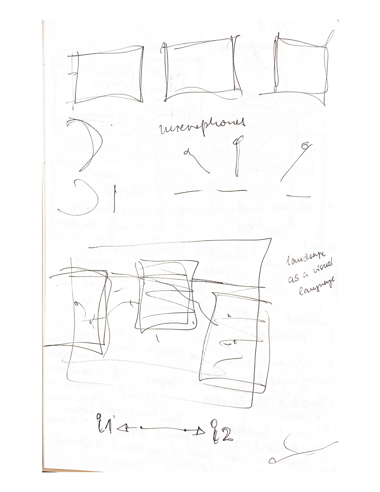

Raum als Interface 2
a personal work in progress journal
Ab Woche 5 wurden wir in neue Gruppen zufällig augeteilt. Somit bin ich in die Gruppe mit Lora und Keny gekommen.
In unserer Zusammenarbeit haben wir viel diskutiert. Anfangs haben wir auch viel darüber geredet, womit sich unser Projekt beschäftigen soll.
Dabei haben wir viele Ideen gesammelt, und eine Liste mit 8 Ideen entwickelt. Nach einem relativ langen Iterationsprozess hat sich dabei unsere Kernidee
'people's emotional relationship with the room' ausgebildet, auf die wir uns geeinigt haben - die emotionale Beziehung des Menschen mit dem Raum.
Folgende Skizzen Loras' bilden unseren Arbeits- und Ideenfindungsprozess ab.



Diese Zusammenarbeit war für uns herausfordernd, da wir aus unterschiedlichen Hintergründen kommend, einen gemeinsamen Arbeitsmodus entwickeln mussten.
Am Ende war sie jedoch sehr bereichend und uns ist es doch gelungen aus einem sehr divergierenden Ideenfindungsprozess, konkrete Ideen und Ansatzpunkte zu finden.
Am Anfang wurden viele verschiedene Ideen und Weiterentwicklungen vorgeschlagen. Dabei hatte ich stets das Gefühl
diese Ideen unter einem kohärentes Konzept einbetten zu müssen.
Am letzten Donnerstag vor den Weihnachtsferien wurde ein Showing unserer Projekte, beider Perspectives Module angesetzt.
Dies hat sich als sehr Produktiv herausgestellt, insofern als dass wir es gemeinsam geschafft hatten, ein, aus meiner Perspektive,
abgerundetes Projekt zu entwickeln, welches sich in das Konzept 'people's emotional relationship with the room' vollständig einordnen konnte.
Im Endeffekt ging es darum, in einem Teil des Raumes, Audio- und Bewegungsdaten zu messen. Diese sollten dann im Computer interpretiert werden und
als visuelles Signal auf denselben Teil des Raum projiziert werden. Umgesetzt mit dem Programm Touchdesigner, sollten die gemessenen, Audio- und Bewegungsdaten als projizierte, visuelle-graphische Ausdrücke,
die Stimmungen und Emotionen der Menschen im Raum wiedergeben, oder spiegeln. Es sollte eine Art Gespräch mit dem Raum entstehen, ein Feedback-Loop, mit graphischen Interpretationen, welche
emotionale Stimmung der Menschen wiedergeben sollte, und in der Theorie zu einem Art Emotionalen-Gespräch mit dem Raum animieren.
Eine exploration des Raum auf der Emotionalen Dimension, die oft auch wenig Beachtung findet.
Dieses Gespräch haben wir auf unserem Poster zu dem Projekt näher erläutert, wie auch als Diagramm aufgefasst.

Das Poster des Showings

Unsere Installation, mit Poster und Projektionsfläches
Nachdem wir uns auf das Konzept 'people's emotional relationship with the room' geeinigt hatten, ging es in unseren Gesprächen um zwei Kernthemen.
Erstens, die graphische interpretation verschiedener Emotionen. Beispielsweise in der folgenden Situation: die Lautstärke im gemessenen Raumabschnitt
ist hoch, viele Menschen bewegen sich viel, die Stimmung ist als angeregt, aufgerecht, aufgeladen. Wie würde ein graphische Projektion ausehen, welche genau diese
Stimmung der Menschen adequat wiederspiegelt? Über diese Zusammenhänge, zwischen gemessenen Indikatoren, verschiedener Stimmungen und Emotionen und möglichen Graphischen
Interpretationen hatten wir gesprochen. Zweitens, und oftmals aus meinen Sorgen entspringend, über Fragen wie:
was sind Emotionen überhaupt und wie können wir sie messen. Eine sehr psychologisch-philosophische Frage, inwiefern auch überhaupt Indikatoren und Messungen
von Verhalten und physiologischen Reaktionen überhaupt die Inferenz auf interne Emotionen ermöglichen. Emotions-Begriffe werden teils auch aus der Motivation heraus,
psychologisch-definierte Konzepte für eine Operationaliserung bereitzustellen, festgelegt.
Andererseits, gilt es festzuhalten das verschiedene Emotionen unabhängig von Kultur und Sozialer Gruppe präsent scheinen,
also dem Menschen Inherent scheinen zu sein scheinen. Im Kontext der Nature vs Nurture Debatte, eher auf der Seite der Nature.
Hebb sagt beispielweise, dass wir aus allen Spezies, die emotionalste sind (Hebb, 1980).
Und Emotionen gibt es auch beispielsweise bei Affen.
Jedoch möchte ich dringlichst, auf die methodischen Problematiken hinweisen, mit denen auch
sehr wissenschaftliche Experimente zu kämpfen haben, wenn es darum geht, das kulturell stark aufgeladene Konzept, Emotion zu untersuchen ().
Aus psychologischer Sicht, gibt es, wie bereits erwähnt, die Unterscheidung zwischen Emotion und physiologisch-körperlichen Reaktion, oftmals auch unter dem Begriff Affekt gefasst. Physiologisch-körperliche Reaktionen sind beispielsweise Schwitzen, Zittern, oder erhöhter Herzschlag, in Reaktion auf interne Emotionen. An dieser Stelle würde ich gerne eine berühmte Definition James' zitieren: "everyone knows what attention is" (James, 1890). Jede Person weiß was Aufmerksamkeit ist, und hier würde ich auch vermuten, dass jede Person, die diesen Text liest weiß was Emotion ist. Und obwohl, jede(r) weiß was Emotion ist, möchte ich jedoch darauf Aufmerksam machen, dass es schwer ist eine Definition zu finden, bzw. es viele gibt, aber ich diese hier biete: Emotionen werden als bewusste, subjektive Erlebnisse, begleitet von körperlichen Reaktionen, wahrgenommen, welche in Reaktion auf unsere Umwelt entstehen und eher kürzerer zeitlicher Dauer sind (mehr dazu später). Dabei kommt natürlich die Frage auf, inwieweit diese beiden Komponenten (Emotion und körperliche Reaktion) zusammenhängen. Ist unser subjektives Erleben von Emotionen, beispielsweise die Emotion, die durch ein schokierendes Ereignis, wie bei einem drohendem Straßenunfall (Abb. 1), entsteht, unserer Körperlicher Reaktion auf die Situation zeitlich nachgestellt? also eine Reaktion auf diese? Oder, reagiert unser körper mit Schock, Zittern, Lähmung, auf unser subjektives Erleben? weil wir uns schokiert fühlen?
Aus psychologischer Sicht, gibt es, wie bereits erwähnt, die Unterscheidung zwischen Emotion und physiologisch-körperlichen Reaktion, oftmals auch unter dem Begriff Affekt gefasst. Physiologisch-körperliche Reaktionen sind beispielsweise Schwitzen, Zittern, oder erhöhter Herzschlag, in Reaktion auf interne Emotionen. An dieser Stelle würde ich gerne eine berühmte Definition James' zitieren: "everyone knows what attention is" (James, 1890). Jede Person weiß was Aufmerksamkeit ist, und hier würde ich auch vermuten, dass jede Person, die diesen Text liest weiß was Emotion ist. Und obwohl, jede(r) weiß was Emotion ist, möchte ich jedoch darauf Aufmerksam machen, dass es schwer ist eine Definition zu finden, bzw. es viele gibt, aber ich diese hier biete: Emotionen werden als bewusste, subjektive Erlebnisse, begleitet von körperlichen Reaktionen, wahrgenommen, welche in Reaktion auf unsere Umwelt entstehen und eher kürzerer zeitlicher Dauer sind (mehr dazu später). Dabei kommt natürlich die Frage auf, inwieweit diese beiden Komponenten (Emotion und körperliche Reaktion) zusammenhängen. Ist unser subjektives Erleben von Emotionen, beispielsweise die Emotion, die durch ein schokierendes Ereignis, wie bei einem drohendem Straßenunfall (Abb. 1), entsteht, unserer Körperlicher Reaktion auf die Situation zeitlich nachgestellt? also eine Reaktion auf diese? Oder, reagiert unser körper mit Schock, Zittern, Lähmung, auf unser subjektives Erleben? weil wir uns schokiert fühlen?
„Wir sind traurig, weil wir weinen, wütend, weil wir zuschlagen, wir haben Angst, weil wir zittern.“ (James, 1890, zum Zusammenhang zwischen körperlicher Reaktion und Emotion).
3 Verschiedene psychologische Theorien stellen mögliche Zusammenhänge zwischen körperliche Reaktion und subjektives Erleben auf (Abb. 1). In der James-Lange Theorie
gibt es auf eine erschreckende Situation in der Umwelt (heranrasendes Auto), erst eine körperliche Reaktion, durch z.B. erhöhtes Herzklopfen, welche dann die Emotion Angst auslöst.
In der Cannon-Bard Theorie finden beide Kompenenten, körperliche Reaktion und Emotion, gleichzeitig und parallel statt. Letztlich wurde in der Schachter-Singer Zwei Faktoren Theorie,
die gleichzeitig-stattfindende bewusste kognitive Bewertung körperlicher Reaktionen, und der nachfolgend-entstehenden Emotion, postuliert.
Verschiedene Belege finden sich zu allen Theorien. Myers schreibt 2008, dass die meisten Wissenschaftler*innen jedoch die Cannon-Bard Theorie, oder die Schachter-Singer Zwei Faktoren
Theorie für wahrscheinlich halten.
Abb. 1: 3 verschiedene Theorien der Emotion, bzgl. des Zusammenhangs zwischen Emotion und physiologishen Reaktionen: James-Lange Theorie, Cannon-Bard Theorie und Schachter-Singer Zwei-Faktoren Theorie. Abbildung übernommen aus Myers, 2008.
Dann gibt es noch unterscheidungen zwischen Emotion, Mood und Stimmung, welche eher temporaler natur sind.
Hebb, D. O. (1980). Essay on mind. Hillsdale, NJ: Erlbaum. 9–16. (pp. 230, 371)
Hebb, D. O. (1980). Essay on mind. Hillsdale, NJ: Erlbaum. 9–16. (pp. 230, 371)